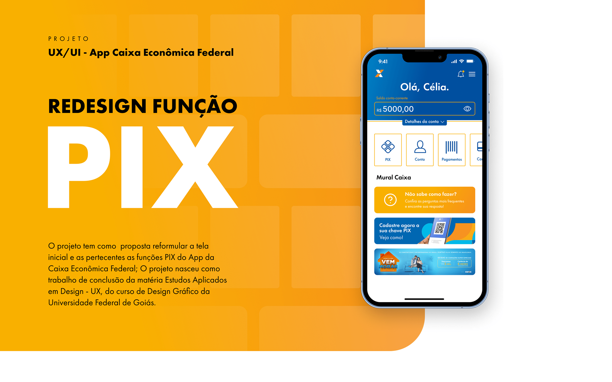
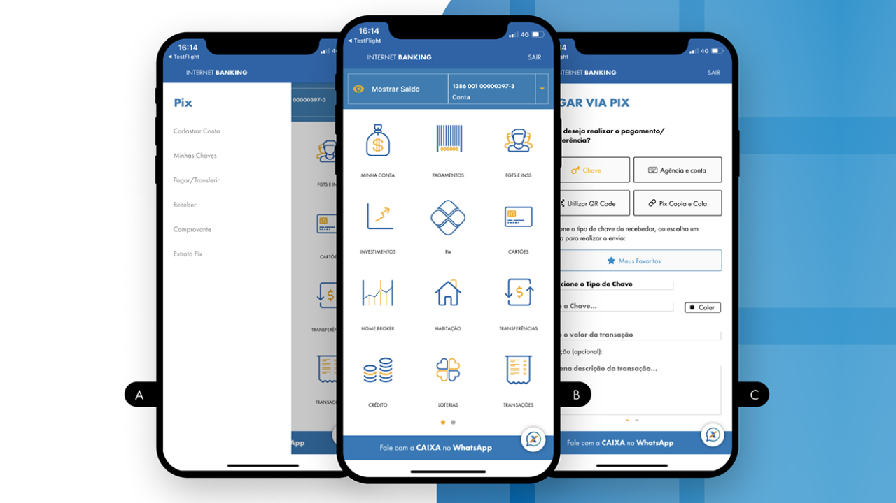
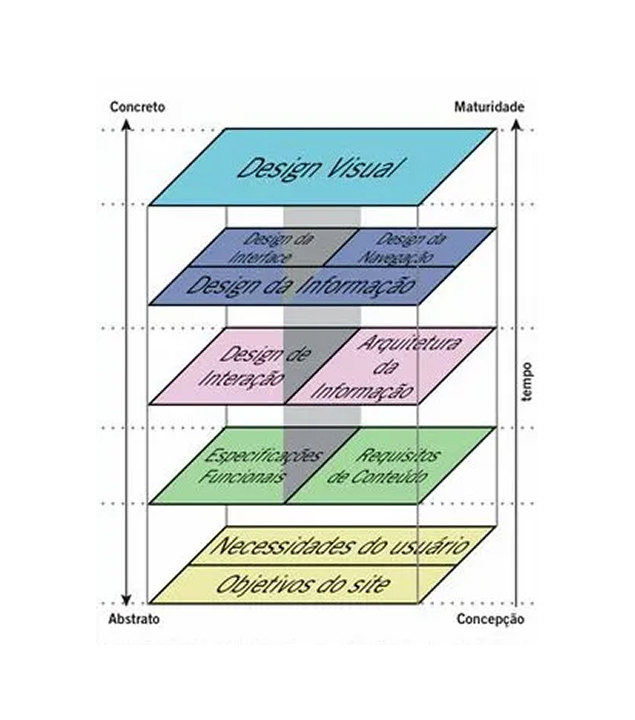
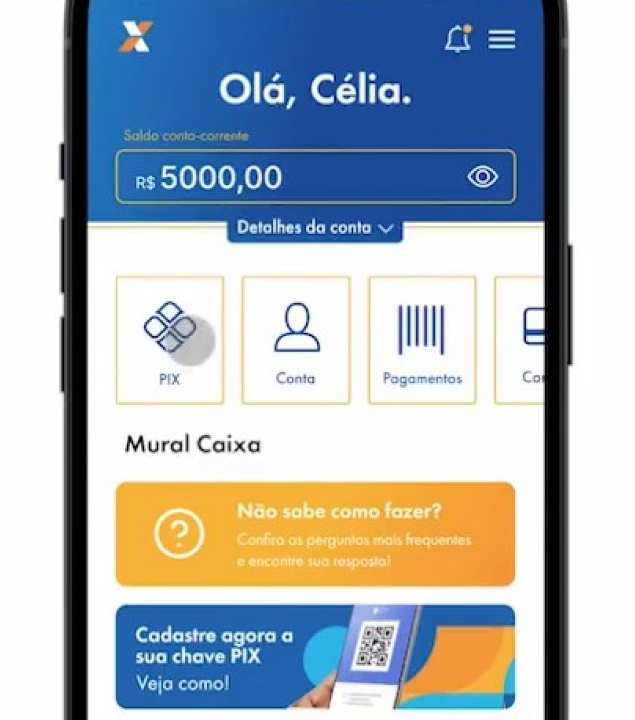
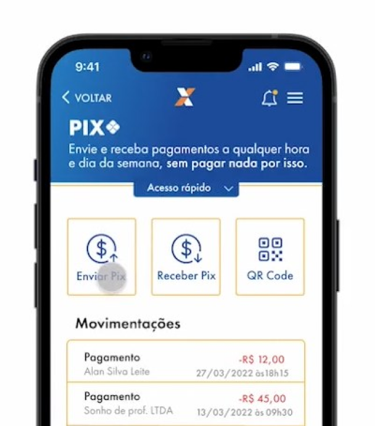
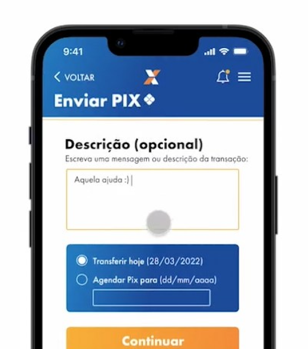

Contexto
Produzido em 2021, o projeto foi o trabalho final da matéria optativa "Experiência do Usuário" do curso de D. Gráfico, servindo como primeira experiência do grupo com a temática.
O tema guia da disciplina consistia em buscar pontos de atrito na interação da terceira idade com as novas tecnologias.
O case teve a finalidade de repensar o fluxo de interação da função PIX, até então novidade como opção para pagamentos no Brasil. O foco da proposta era tornar o processo mais claro e intuitivo aos usuários do aplicativo do banco CAIXA, principalmente os mais velhos.

O principal agravante colhido na análise do fluxo do aplicativo estava na dificuldade de encontrar e preencher dados durante a transferência, função escondida por um menu lateral, botões semelhantes e uma única tela vertical extensa para preencher todos os campos e etapas.

A metodologia usada para o desenvolvimento do redesenho foi a proposta de J.J. Garrett em seu livro The Elements of User Experience, sendo guia metodológico da disciplina. Adiante, avalio como essa condição influenciou na progressão do resultado final.
Análise
Com um levantamento rápido no vídeo do protótipo e uma revisão de heurísticas e convenções de usabilidade, foi possível captar os seguintes pontos de carência na interface:
↓ Clique sobre o tópico para interagir



- Elementos da identidade não conversam, botões e banners parecem frutos de identidades diferentes; ora escolha por preenchimento e degradês, em outros elementos puramente outline. Acredito que essa ambiguidade nasce de uma restrição do escopo original: atualizar os elementos que faziam parte do novo fluxo, porém preservando aspectos e a filosofia geral da identidade antiga, já que o foco não era um rebranding visual completo.
- Existe um atrito visível entre a identidade escolhida e a linguagem visual do sistema escolhido para a aplicação (iOS). Entretanto, é justo considerar que o aplicativo era uma primeira tentativa séria do grupo com a ferramenta e ainda não existiam componentes pré-fabricados como atualmente.
- É relevante considerar que os espaços das interfaces poderiam ser melhor distribuídos, dado que alguns exemplos demonstram uma concorrência visual entre elementos muito próximos e espaços negativos excessivos. Muito provável que o impasse seja fruto da restrição de redesign parcial.
- Pesos textuais muito discrepantes entre títulos de sessão e corpo de texto. Também ocorre uma escolha injustificada de textos em caixa alta em alguns componentes informativos. A escolha de fonte principal também soa equivocada, pois prioriza estética pela legibilidade.
- Espaçamento entre texto e elementos muito apertado, gerando dificuldade de absorver a informação e leitura.
- Escolha leiga para indicadores de status entre as telas, poderia ser mais eficiente e menos redundante.
- UX writing amador nas telas de carregamento. Houve a priorização de uma voz paternalista/emocional (provavelmente fruto de uma escolha de narrativa para o rebranding) em detrimento de instruções claras sobre o que está acontecendo.
- Falta refinamento no alinhamento de textos e espaçamento apropriado em alguns botões da interface. As bordas dos elementos também carecem de um design system harmonioso.
- Apesar da escolha de animações para a troca de telas do protótipo refletir a ideia de progressão, ainda tem um ritmo lento para a função, principalmente em casos onde ela pode ser repetida várias vezes ao longo de um dia.
- Carência de uma configuração para alterar o tamanho dos textos e elementos da interface, requisito essencial pensando na acessibilidade do público alvo trabalhado.
Conclusão
Avalio em retrospecto como a fundamentação do projeto na metodologia de Garrett causou um engessamento no refinamento do produto. A principal crítica feita a esse sistema está relacionada ao seu caráter datado, qual representa um fluxo de desenvolvimento de soluções de software do início dos anos 2000 focado na construção, porém carente de processos iterativos adotados por metodologias modernas. É possível imaginar como uso de testes com o público alvo destacariam boa parte dos pontos analisados anteriormente.
Ainda sobre o modelo, também é relevante destacar sua superficialidade ao generalizar conceitos complexos das etapas em frases simples, sem uma fragmentação de processos e seus resultados esperados. Por essa ótica, é possível prever como o ponto de partida com certo nível de abstração afetou o resultado.
Outros fatores a se considerar para as pontas soltas são o repertório acadêmico extremamente gráfico e ainda introdutório dos autores, somadas ao tempo reduzido para atingir um estado palpável para a aplicação e o caráter fracionado de desenvolvimento durante o decorrer do curso.
Por fim, a aplicação reflete a primeira experiência dos estudantes com a área e ferramenta (Figma), carecendo de uma visão mais aguçada sobre a influência dos pequenos detalhes na usabilidade final. Todavia, o artefato cumpre com seu objetivo geral de reformular a experiência e navegação do aplicativo para um processo mais claro e agradável para o usuário.